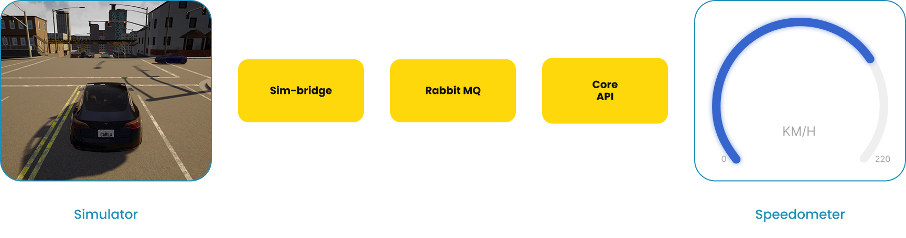

1st SCARline Workshop
On Operationalization of Driving Simulator Studies for Accessible In-Vehicle HMI Prototyping and Evaluation
Workshop Schedule
-
Session 1
Introduction
We will introduce you to SCARline and you will hear two interesting presentations.
-
Session 2
Platform Walkthrough
We will show you the platform capabilities and answer any questions you may have.
-
Session 3
Widget Creation
We will explain how widgets can be created. As groups, you then get to design your own widgets.
-
Official coffee break
Recharge break
-
Session 4
Live Deployment
You will have the opportunity to explore SCARline and deploy the widgets you created and see them live.
-
Session 5
Feedback
We'd love to hear your feedback in the form of a discussion and a few questions.
Part A: What is SCARline?
SCARline sits on top of a driving simulator and handles the technical complexity underneath, so you can focus on your research question and study design rather than fighting with the tools. You don't need to know how the simulator works internally — just what you're testing and how. That doesn't mean SCARline takes the creative work away from you. You're still the one designing the interaction, the platform just removes the plumbing between your idea and a running study.
SCARline at a glance:
- A plug-and-play UX platform for driving simulation research.
- One system to build, configure, run, and review a study from start to finish.
- Built for researchers and designers, from no-code builds to full custom code.
- Open source and available at github.com/tugcanonbas/SCARline.
1. SCARline Architecture
![SCARline system architecture diagram showing the CLI starting the SCARline Hub, CARLA Server and Client, and Docker environment. The Hub communicates with the Core API, while Sim-Bridge connects CARLA with RabbitMQ for logs and commands. RabbitMQ also connects to Python I/O sensors and PostgreSQL logs. The Core API communicates with the HMI and overlay, which provide interfaces for UI components UI1-UI4. All components run on the operating system, with Docker providing the containerized runtime environment.](images/scarline-architecture.png)
Information Flow
When something changes in the simulation (e.g., the vehicle's speed reaches 80 km/h) CARLA (the driving simulator itself) doesn't talk to your widget directly. It first passes that value to the Sim-Bridge, whose job is to translate raw simulator state into messages the rest of the system understands. The Sim-Bridge publishes that message to RabbitMQ, a message queue that sits between the simulator side and the widget side of the pipeline. The message doesn't go anywhere on its own from there. It waits in the queue until something is ready to pick it up.
That something is the Core-API, which consumes the message from RabbitMQ, then processes and packages it into the shape your widget actually needs (e.g., turning "speed = 80km/h" into whatever data field your widget is listening for). Once packaged, the Core-API pushes that data to the Overlay over a websocket connection. This is a live, always-open channel rather than a one-off request. The Overlay is what updates the widget on screen in response.
Short version: simulator state flows out through Sim-Bridge → queue → Core-API → live push → your widget on screen, with RabbitMQ acting as a buffer in the middle rather than a direct handoff.

2. Widgets
A widget is the piece of interface a driver or passenger actually sees and interacts with inside the car. This could for example be a heart-rate readout on the dashboard, a warning icon that appears when you're following too closely, a passenger-side screen showing trip stats. Widgets are connected to the simulation, so it can change based on what's happening in the drive, e.g., speed, distance to an obstacle, elapsed time, or whatever state you choose to hook it to. Every widget has, at minimum, a resting state (what it looks like normally) and a triggered state (what changes when the condition you define is met).

Widget Structure
Every widget lives in its own folder insidewidgets/components/ (e.g., widgets/components/calendar/) and is made up of three files:

- A preview image (e.g.,
activecall.png) — a snapshot of the widget shown in the SCARline interface editor, so it's recognizable without loading the live widget. index.html— the widget's visual structure, styled with Tailwind CSS classes.widget.json— the configuration file: it defines the widget's dimensions and, most importantly, the data bindings it expects to receive.
How widgets receive data
Data binding allows your widget to receive live data from the simulator. This is handled through thedata-bind attribute in your html file by connecting it to the matching key in widget.json. For example: <span data-bind="calendar.date_label">11</span>
In your json file this would then be:
"bindings": {
"calendar.date_label": {
"type": "string",
"description": "Current day-of-month label.",
"default": "11"
},
}
Sending actions out
Buttons or other interactive elements can change what a widget shows throughdata-action. When clicked, the shared runtime sends that action to the SCARline system:
<button type="button" data-action="calendar.add_event">+</button>
Most widgets are read-only, so just displaying data. If a widget needs something more custom, it can also send events directly through the SCARline API, though that's rarely needed for a first widget. You would do this with a custom script:
<script>
window.SCARline.send("widget.interaction", {
widgetId: "appointments",
action: "add_event"
});
</script>
<script src=”../../widget-runtime.js”></script>) loaded by every widget, so you never have to write that plumbing yourself.
Build or recreate a widget
Create a new folder insidecomponents/, draft your index.html with Tailwind classes, define what data it expects in widget.json, and run npm run dev inside the widgets folder to preview and tweak it live in your browser — before it's picked up by the rest of the system